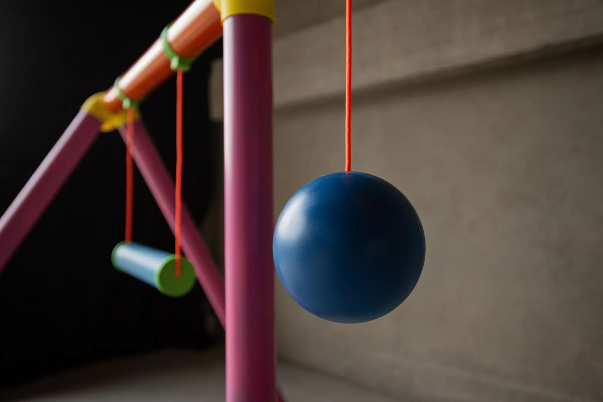
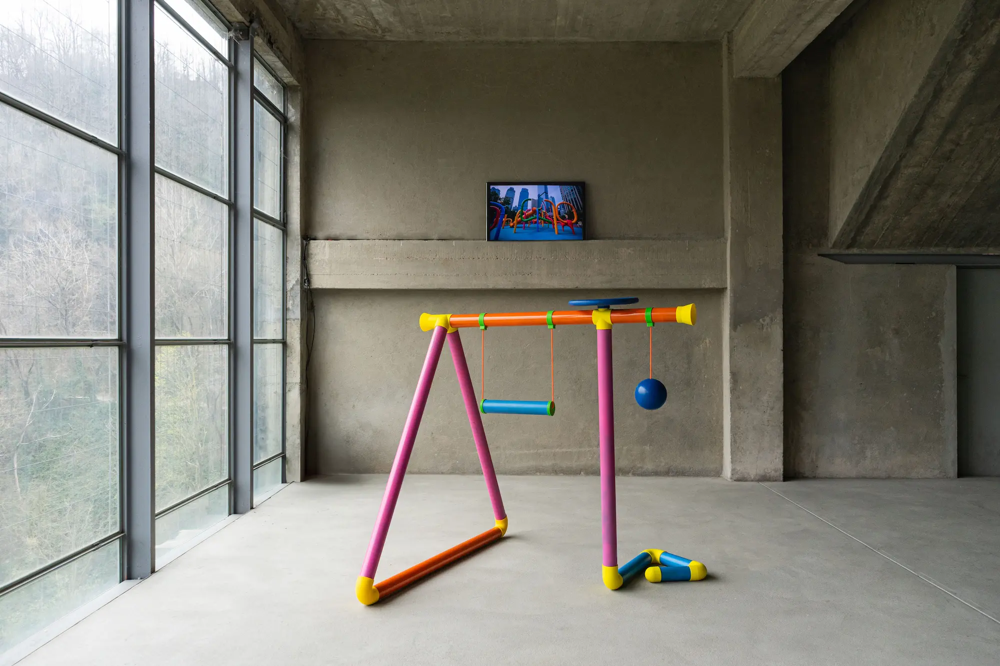
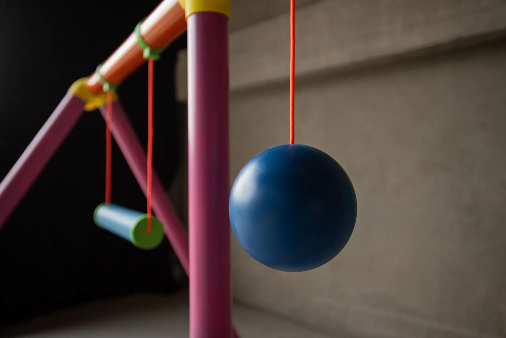
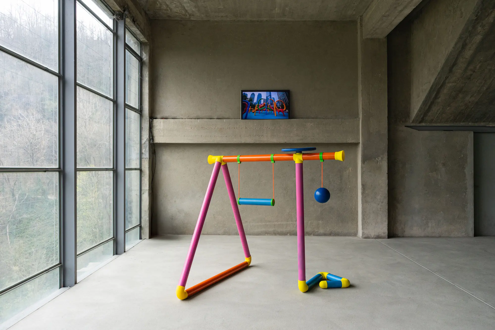

Tubi
Tubi is a playful AI-inspired installation that invites people to explore the blurred boundary between reality and fiction, where interacting with a swing, wheel, and a ball shapes sound and visual outputs.
Brief
Working as a group of three, and inspired by an open brief that encouraged experimenting with phone sensors and AI tools like Replicate, we set out to create something that felt AI-born.
Outcome and key learnings
The result is a playful blend of sound, motion, and visuals where the digital responds to the physical.
Learned how to incorporate ready-made materials with custom 3D prints to bring concepts to life.
Learned to plan and adapt for exhibitions with flexibility and hidden tech.
Concept
Where does human imagination end, and artificial intelligence begin?
Tubi invites visitors into a blurred space between reality and fiction.
As people interact with the structure, taking out the inner child that is inside of everyone of us, cheerful sounds and shifting visuals guide them through landscapes and places that might exist, or only could.
Are we the designers, or just players in a world AI helped build?
Image from the AI-generated archive
Interactions
Each interaction blends physical play with digital transformation so visitors can influence the projected images through movement.
- Swing → triggers scene swaps with a sound effect
- Steering wheel → rotates the image and plays musical tones
- Ball → distorts the image based on x/y movement
- Tube-speakers → amplify and distort human voice using only analog acoustics
Interaction testing
Prototyping & Construction
We started by exploring how to hide the tech inside of the structure. Early sketches, AI-generated renders, and material tests helped us shape the final outcome.
Key components:
- Polypropylene tubes for the main frame
- Custom 3D-printed joints, caps, swing supports and wheel
- Smartphones used as wireless sensors for a cable-free setup
- All electronics hidden to maintain a clean, playful aesthetic
All the components
Inviting the inner child to take over
Many hours of 3D printing and spray paint bottles later...

Learnings
- When exhibiting, adaptability is key
- Always have plan B if the tech fails
- When making exhibition structures design for easy assembly and disassembly
- The best part? Seeing people get curious and playful with your design
Like what you see? Just want to connect?
Let’s build something meaningful together :)
Copied!